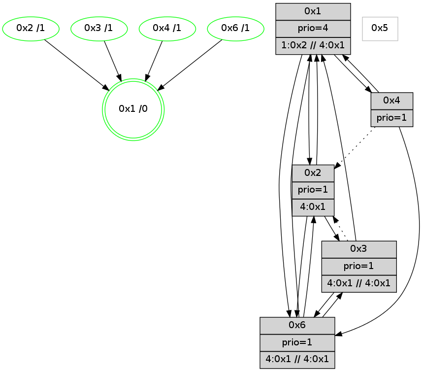

>> << IDX [start] -100 -25 -5 +0 +5 +25 +100 [795.396423101]
 Previous packets
790.003197 beacon05(adaf) #0 coord=01,02,05,03,04,06 cycle=432.0ms assoc 64 39 32
790.013197 beacon03(adaf) #0 coord=01,02,05,03,04,06 cycle=432.0ms assoc 64 a5 16
790.023198 beacon04(adaf) #0 coord=01,02,05,03,04,06 cycle=432.0ms assoc 64 03 3c
790.033197 beacon06(adaf) #0 coord=01,02,05,03,04,06 cycle=432.0ms assoc 64 77 20
790.044938 [Hello(6): seq=507 sym=3,4,1,2 sysInfo=hasWarning,coloring-mode-on,ColoringModeIndicationCalled stat=3:15,2,10,1/4:6,13,1,0/1:8,0,1,1/2:0,14,5,2]
790.047013 [Color(1) seq=20 @0:0 prio=4 >1.@2,1.@3,1.@6 >>4.@1,1.@2,1.@3]
----------------------------------------------------------------------
790.475344 beacon01(adaf) #0 coord=01,02,05,03,04,06 cycle=432.0ms assoc
-- color-indic=1 64 82 57
790.485307 beacon02(adaf) #0 coord=01,02,05,03,04,06 cycle=432.0ms assoc 64 d3 a8
790.495305 beacon05(adaf) #0 coord=01,02,05,03,04,06 cycle=432.0ms assoc 64 75 82
790.505305 beacon03(adaf) #0 coord=01,02,05,03,04,06 cycle=432.0ms assoc 64 e9 a6
790.515307 beacon04(adaf) #0 coord=01,02,05,03,04,06 cycle=432.0ms assoc 64 4f 8c
790.525308 beacon06(adaf) #0 coord=01,02,05,03,04,06 cycle=432.0ms assoc 64 3b 90
790.536143 [Hello(1): seq=493 sym=2,4,6 sysInfo=hasWarning,coloring-mode-on,ColoringModeRequestCalled stat=2:8,0,5,2/4:5,11,3,0/6:2,2,2,0]
790.541557 [Color(3) seq=20 @0:0 prio=1 >4.@1,1.@2,1.@6 >>4.@1,1.@2,1.@3]
790.543468 [Color(4) seq=20 @0:0 prio=1]
----------------------------------------------------------------------
790.967451 beacon01(adaf) #0 coord=01,02,05,03,04,06 cycle=432.0ms assoc
-- color-indic=1 64 46 38
790.977412 beacon02(adaf) #0 coord=01,02,05,03,04,06 cycle=432.0ms assoc 64 17 c7
790.987413 beacon05(adaf) #0 coord=01,02,05,03,04,06 cycle=432.0ms assoc 64 b1 ed
790.997412 beacon03(adaf) #0 coord=01,02,05,03,04,06 cycle=432.0ms assoc 64 2d c9
791.007415 beacon04(adaf) #0 coord=01,02,05,03,04,06 cycle=432.0ms assoc 64 8b e3
791.017414 beacon06(adaf) #0 coord=01,02,05,03,04,06 cycle=432.0ms assoc 64 ff ff
791.029159 [Hello(6): seq=508 sym=3,4,1,2 sysInfo=hasWarning,coloring-mode-on,ColoringModeIndicationCalled stat=3:15,3,10,1/4:6,13,1,0/1:9,1,1,1/2:0,15,5,2]
791.033295 [Color(1) seq=21 @0:0 prio=4 >1.@2,1.@3,1.@6 >>4.@1,1.@2,1.@3]
----------------------------------------------------------------------
791.459559 beacon01(adaf) #0 coord=01,02,05,03,04,06 cycle=432.0ms assoc
-- color-indic=1 64 0b 3f
791.469521 beacon02(adaf) #0 coord=01,02,05,03,04,06 cycle=432.0ms assoc 64 5a c0
791.479520 beacon05(adaf) #0 coord=01,02,05,03,04,06 cycle=432.0ms assoc 64 fc ea
791.489520 beacon03(adaf) #0 coord=01,02,05,03,04,06 cycle=432.0ms assoc 64 60 ce
791.499520 beacon04(adaf) #0 coord=01,02,05,03,04,06 cycle=432.0ms assoc 64 c6 e4
791.509523 beacon06(adaf) #0 coord=01,02,05,03,04,06 cycle=432.0ms assoc 64 b2 f8
791.522023 [Color(6) seq=21 @0:0 prio=1 >4.@1,1.@2,1.@3 >>4.@1,1.@2,1.@3]
791.524633 [Hello(1): seq=494 sym=2,4,6 sysInfo=hasWarning,coloring-mode-on,ColoringModeRequestCalled stat=2:8,1,5,2/4:5,11,3,0/6:2,2,2,0]
791.527723 [Hello(4): seq=595 sym=6,1 sysInfo=hasWarning,coloring-mode-on,ColoringModeIndicationCalled stat=6:11,0,7,10/1:6,6,1,1]
791.530019 [STC(1) #0.62 new-neigh,tree-change,stable,to-color d=0]
791.531396 [Color(4) seq=21 @0:0 prio=1]
791.537549 [Hello(2): seq=1085 sym=6,3,1 sysInfo=coloring-mode-on,ColoringModeIndicationCalled stat=6:0,1,3,3/3:0,1,1,0/1:4,6,0,1]
791.540250 [Color(2) seq=21 @0:0 prio=1 >4.@1,1.@3,1.@4,1.@6]
----------------------------------------------------------------------
791.951666 beacon01(adaf) #0 coord=01,02,05,03,04,06 cycle=432.0ms assoc
-- color-indic=1 64 cf 50
791.961628 beacon02(adaf) #0 coord=01,02,05,03,04,06 cycle=432.0ms assoc 64 9e af
791.971628 beacon05(adaf) #0 coord=01,02,05,03,04,06 cycle=432.0ms assoc 64 38 85
791.981628 beacon03(adaf) #0 coord=01,02,05,03,04,06 cycle=432.0ms assoc 64 a4 a1
791.991628 beacon04(adaf) #0 coord=01,02,05,03,04,06 cycle=432.0ms assoc 64 02 8b
792.001628 beacon06(adaf) #0 coord=01,02,05,03,04,06 cycle=432.0ms assoc 64 76 97
792.013631 [Hello(6): seq=509 sym=3,4,1,2 sysInfo=hasWarning,coloring-mode-on,ColoringModeIndicationCalled stat=3:15,3,10,1/4:6,13,1,0/1:10,2,2,1/2:1,0,5,2]
792.015456 [Color(1) seq=22 @0:0 prio=4 >1.@2,1.@3,1.@6 >>4.@1,1.@2,1.@3]
792.018499 [STC(6)->1 #0.62 new-neigh,tree-change,stable,to-color d=1]
----------------------------------------------------------------------
792.443774 beacon01(adaf) #0 coord=01,02,05,03,04,06 cycle=432.0ms assoc
-- color-indic=1 64 83 e0
792.453734 beacon02(adaf) #0 coord=01,02,05,03,04,06 cycle=432.0ms assoc 64 d2 1f
792.463736 beacon05(adaf) #0 coord=01,02,05,03,04,06 cycle=432.0ms assoc 64 74 35
792.473736 beacon03(adaf) #0 coord=01,02,05,03,04,06 cycle=432.0ms assoc 64 e8 11
792.483736 beacon04(adaf) #0 coord=01,02,05,03,04,06 cycle=432.0ms assoc 64 4e 3b
792.505861 [Hello(1): seq=495 sym=2,4,6 sysInfo=hasWarning,coloring-mode-on,ColoringModeRequestCalled stat=2:9,2,5,2/4:5,11,3,0/6:2,2,3,0]
792.510211 [Hello(4): seq=596 sym=6,1 asym=2 sysInfo=hasWarning,coloring-mode-on,ColoringModeIndicationCalled stat=6:11,0,8,10/1:6,7,1,1/2:0,1,0,0]
792.512208 [Hello(2): seq=1086 sym=6,3,1 sysInfo=coloring-mode-on,ColoringModeIndicationCalled stat=6:0,1,4,3/3:0,1,1,0/1:4,7,0,1]
792.513928 [Color(4) seq=22 @0:0 prio=1]
792.516941 [Color(2) seq=22 @0:0 prio=1 >4.@1,1.@3,1.@4,1.@6]
----------------------------------------------------------------------
792.935881 beacon01(adaf) #0 coord=01,02,05,03,04,06 cycle=432.0ms assoc
-- color-indic=1 64 47 8f
792.945842 beacon02(adaf) #0 coord=01,02,05,03,04,06 cycle=432.0ms assoc 64 16 70
792.955843 beacon05(adaf) #0 coord=01,02,05,03,04,06 cycle=432.0ms assoc 64 b0 5a
792.965844 beacon03(adaf) #0 coord=01,02,05,03,04,06 cycle=432.0ms assoc 64 2c 7e
792.975843 beacon04(adaf) #0 coord=01,02,05,03,04,06 cycle=432.0ms assoc 64 8a 54
792.985843 beacon06(adaf) #0 coord=01,02,05,03,04,06 cycle=432.0ms assoc 64 fe 48
792.998318 [Color(6) seq=22 @0:0 prio=1 >4.@1,1.@2,1.@3 >>4.@1,1.@2,1.@3]
793.007936 [Color(1) seq=23 @0:0 prio=4 >1.@2,1.@3,1.@6 >>4.@1,1.@2,1.@3]
----------------------------------------------------------------------
793.427990 beacon01(adaf) #0 coord=01,02,05,03,04,06 cycle=432.0ms assoc
-- color-indic=1 64 19 ee
793.437951 beacon02(adaf) #0 coord=01,02,05,03,04,06 cycle=432.0ms assoc 64 48 11
793.447953 beacon05(adaf) #0 coord=01,02,05,03,04,06 cycle=432.0ms assoc 64 ee 3b
793.457953 beacon03(adaf) #0 coord=01,02,05,03,04,06 cycle=432.0ms assoc 64 72 1f
793.467952 beacon04(adaf) #0 coord=01,02,05,03,04,06 cycle=432.0ms assoc 64 d4 35
793.477952 beacon06(adaf) #0 coord=01,02,05,03,04,06 cycle=432.0ms assoc 64 a0 29
793.489722 [Hello(6): seq=510 sym=3,1,2 sysInfo=hasWarning,coloring-mode-on,ColoringModeIndicationCalled stat=3:0,4,10,1/1:11,3,2,1/2:2,1,5,2]
793.491517 [Hello(1): seq=496 sym=2,4,6 sysInfo=hasWarning,coloring-mode-on,ColoringModeRequestCalled stat=2:10,3,5,2/4:6,12,3,0/6:2,2,3,0]
793.495921 [Hello(4): seq=597 sym=6,1 asym=2 sysInfo=hasWarning,coloring-mode-on,ColoringModeIndicationCalled stat=6:11,0,8,10/1:6,8,1,1/2:0,2,0,0]
793.499461 [Color(2) seq=23 @0:0 prio=1 >4.@1,1.@3,1.@4,1.@6]
793.503220 [Color(3) seq=23 @0:0 prio=1 >4.@1,1.@2,1.@6 >>4.@1,1.@2,1.@3]
793.509169 [Color(4) seq=23 @0:0 prio=1]
----------------------------------------------------------------------
793.920097 beacon01(adaf) #0 coord=01,02,05,03,04,06 cycle=432.0ms assoc
-- color-indic=1 64 dd 81
793.930059 beacon02(adaf) #0 coord=01,02,05,03,04,06 cycle=432.0ms assoc 64 8c 7e
793.940059 beacon05(adaf) #0 coord=01,02,05,03,04,06 cycle=432.0ms assoc 64 2a 54
793.950058 beacon03(adaf) #0 coord=01,02,05,03,04,06 cycle=432.0ms assoc 64 b6 70
793.960059 beacon04(adaf) #0 coord=01,02,05,03,04,06 cycle=432.0ms assoc 64 10 5a
793.970061 beacon06(adaf) #0 coord=01,02,05,03,04,06 cycle=432.0ms assoc 64 64 46
793.982562 [Color(6) seq=23 @0:0 prio=1 >4.@1,1.@2,1.@3 >>4.@1,1.@2,1.@3]
793.988943 [STC(1) #0.63 new-neigh,tree-change,stable,to-color d=0]
793.991208 [Color(1) seq=24 @0:0 prio=4 >1.@2,1.@3,1.@6 >>4.@1,1.@2,1.@3]
----------------------------------------------------------------------
794.412205 beacon01(adaf) #0 coord=01,02,05,03,04,06 cycle=432.0ms assoc
-- color-indic=1 64 91 31
794.422167 beacon02(adaf) #0 coord=01,02,05,03,04,06 cycle=432.0ms assoc 64 c0 ce
794.432167 beacon05(adaf) #0 coord=01,02,05,03,04,06 cycle=432.0ms assoc 64 66 e4
794.442166 beacon03(adaf) #0 coord=01,02,05,03,04,06 cycle=432.0ms assoc 64 fa c0
794.452167 beacon04(adaf) #0 coord=01,02,05,03,04,06 cycle=432.0ms assoc 64 5c ea
794.462167 beacon06(adaf) #0 coord=01,02,05,03,04,06 cycle=432.0ms assoc 64 28 f6
794.473358 [Hello(1): seq=497 sym=2,4,6 sysInfo=hasWarning,coloring-mode-on,ColoringModeRequestCalled stat=2:11,4,5,2/4:6,13,3,0/6:2,2,3,0]
794.477782 [Hello(6): seq=511 sym=3,1,2 sysInfo=hasWarning,coloring-mode-on,ColoringModeIndicationCalled stat=3:1,5,10,1/1:12,4,3,1/2:2,2,5,2]
794.480517 [STC(2)->1 #0.63 new-neigh,tree-change,stable,to-color d=1]
794.483100 [Color(2) seq=24 @0:0 prio=1 >4.@1,1.@3,1.@4,1.@6]
794.485106 [STC(6)->1 #0.63 new-neigh,tree-change,stable,to-color d=1]
794.490198 [STC(3)->1 #0.63 new-neigh,tree-change,stable,to-color d=1]
794.492478 [Color(3) seq=24 @0:0 prio=1 >4.@1,1.@2,1.@6 >>4.@1,1.@2,1.@3]
794.498703 [STC(4)->1 #0.63 new-neigh,tree-change,stable,to-color d=1]
794.502573 [Color(4) seq=24 @0:0 prio=1]
----------------------------------------------------------------------
794.904312 beacon01(adaf) #0 coord=01,02,05,03,04,06 cycle=432.0ms assoc
-- color-indic=1 64 55 5e
794.914273 beacon02(adaf) #0 coord=01,02,05,03,04,06 cycle=432.0ms assoc 64 04 a1
794.924274 beacon05(adaf) #0 coord=01,02,05,03,04,06 cycle=432.0ms assoc 64 a2 8b
794.934273 beacon03(adaf) #0 coord=01,02,05,03,04,06 cycle=432.0ms assoc 64 3e af
794.944275 beacon04(adaf) #0 coord=01,02,05,03,04,06 cycle=432.0ms assoc 64 98 85
794.954274 beacon06(adaf) #0 coord=01,02,05,03,04,06 cycle=432.0ms assoc 64 ec 99
794.966736 [Color(6) seq=24 @0:0 prio=1 >4.@1,1.@2,1.@3 >>4.@1,1.@2,1.@3]
794.971746 [Color(1) seq=25 @0:0 prio=4 >1.@2,1.@3,1.@6 >>4.@1,1.@2,1.@3]